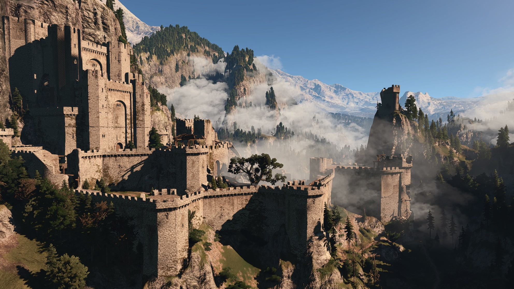
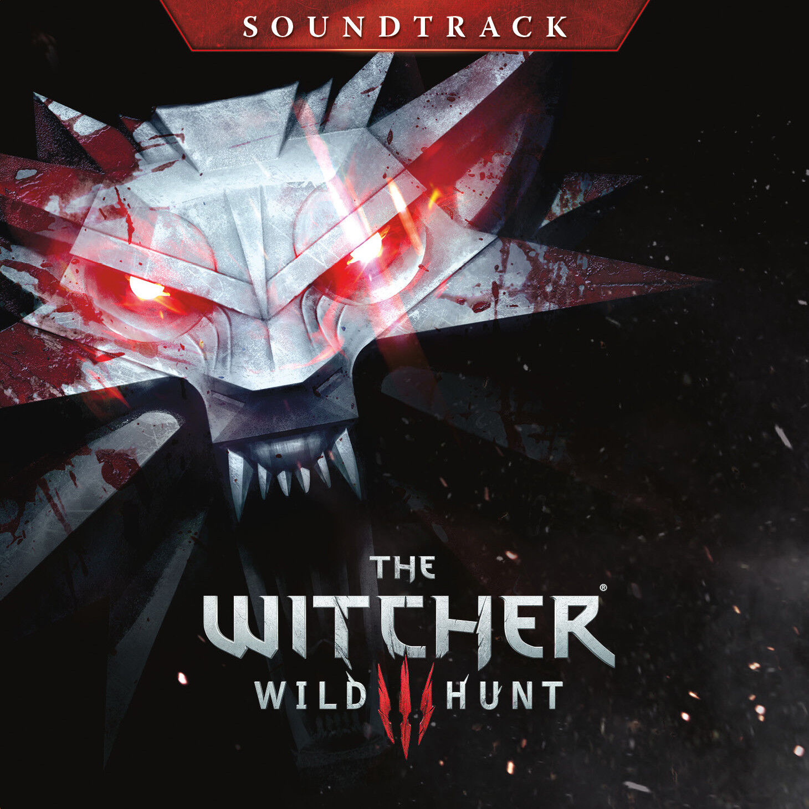
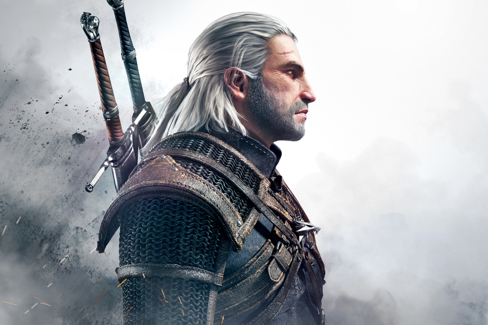
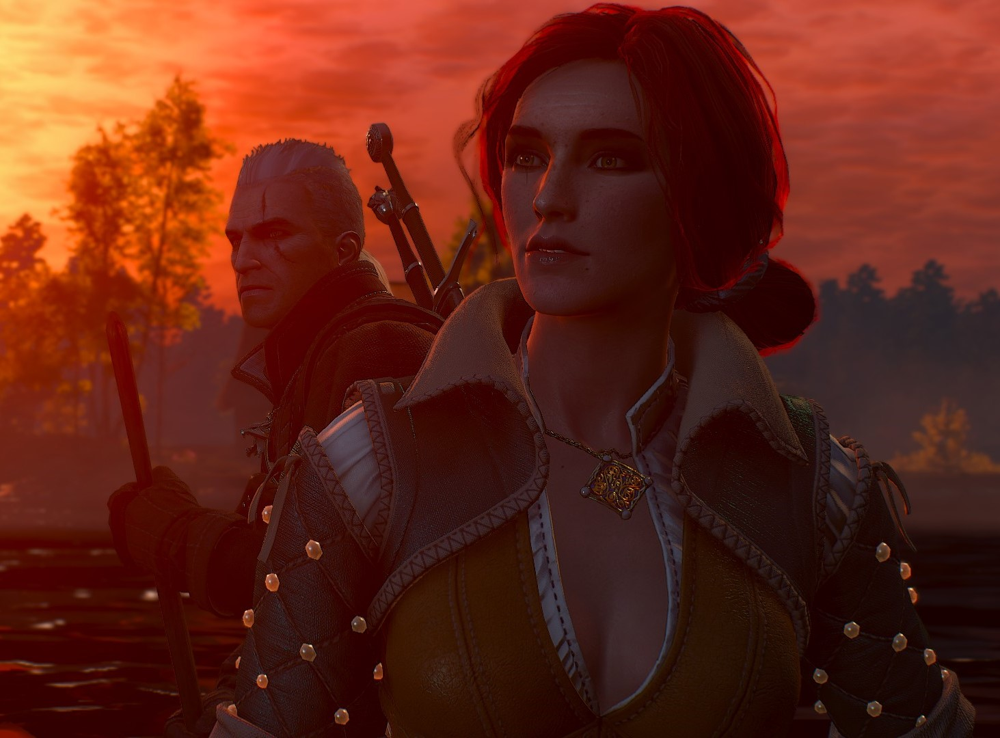

   
Marcin Przybylowicz & Percival Schuttenbach — Kaer Morhen
Percival — Hunt Or Be Hunted
Marcin Przyby owicz Percival — Destiny Of Wild Hunt
Percival & Marcin Przybyłowicz & Mikolai Stroinski — Silver For Monsters
00:00